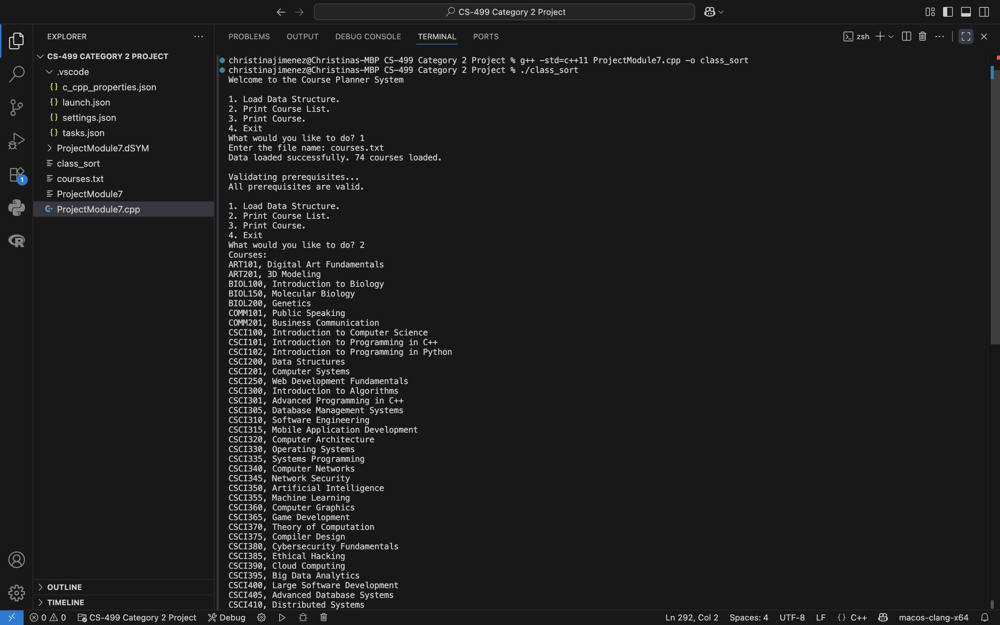

About Me
Welcome to my ePortfolio! I am a Computer Science student passionate about data analysis and software development. This portfolio showcases my journey through the Computer Science program and highlights my technical skills across software engineering, algorithms, and database management.
Professional Self-Assessment
This portfolio represents a culmination of my skills and strengths in computer science, including proficiency in SQL, Python, Java, and C++. While I specialize in data solutions, my portfolio highlights versatile skills applicable to any project, such as software design, algorithm optimization, and best coding practices. My knowledge of secure development practices, including static and dynamic code reviews using tools like Oracle, enables me to ensure integrity and security in every project. Additionally, my experience with SCRUM and various development processes allows me to work effectively both independently and as part of a team.
The Computer Science program has equipped me not only with the technical skills needed in the tech industry but has also refined my ability to work collaboratively in professional environments. My knowledge of SCRUM and Agile principles enables me to optimize workflow and communicate effectively with team members. In the workplace, execution is only half of the job, communication is equally critical. Whether engaging with co-workers, collaborators, clients, or stakeholders, I am prepared to present complex information in a digestible and accessible manner to everyone.
How the Artifacts Demonstrate My Technical Range
My portfolio showcases a comprehensive understanding of various Computer Science principles and programming languages, including SQL, Python, C++, Java, and XML. Each artifact has been carefully selected to demonstrate different facets of my technical expertise.
Project One: Software Design and Engineering
My first project demonstrates my strength in design and software engineering through a Health App developed in Android Studio using Java and XML. This application is designed to be user-friendly, allowing women to track their weight, reach their fitness goals, and monitor their nutrition using an integrated food diary. The app is composed of multiple activities that seamlessly integrate with one another, utilizing RecyclerView to ensure the interface is easily navigable and responsive. The application also requests user permission before enabling SMS notifications, demonstrating both ethical coding practices and thoughtful app functionality. This project showcases my ability to create intuitive user interfaces while adhering to professional development standards.
Project Two: Algorithms and Data Structures
My second project demonstrates proficiency in data structures and algorithms through a class sorting program. While simple in concept, this program employs innovative techniques to ensure high functionality and efficiency. The enhanced artifact uses a binary search tree to maintain courses in sorted order, as opposed to a linear search approach used previously that would significantly decrease efficiency in terms of time complexity. Additionally, I implemented a hash table that allows for constant time lookups during prerequisite validation. Both features demonstrate my understanding of how to optimize data structures and algorithms for maximum program efficiency.
Project Three: Databases
The third artifact is a dashboard that displays rescued animals and allows users to search through data in an intuitive and user friendly manner. This project demonstrates my understanding of database design and optimization, particularly with MongoDB. I optimized the queries to enable efficient filtering of large datasets, organizing the dashboard to provide seamless navigation and search functionality based on various animal categories and characteristics. This artifact highlights my ability to design database solutions that balance performance with usability.
Preparing for the Computer Science Field
Completing my coursework throughout the program and developing this ePortfolio has significantly shaped my professional goals and values while preparing me to enter the computer science field as a competitive candidate. Through projects like the Health App, I learned to design solutions with specific user groups in mind, demonstrating my ability to listen, research, and apply my knowledge to please both end users and stakeholders. The Class Sort program taught me the importance of selecting appropriate algorithms and data structures, which both directly impact program performance and scalability. The Animal Rescue dashboard reinforced the critical role of database optimization in real world applications where efficiency and user experience are important.
Beyond the artifacts included in this portfolio, my experience with security practices has been particularly formative. Conducting static and dynamic code reviews has instilled in me a security mindset that anticipates potential vulnerabilities before they become exploits. I've learned to evaluate trade offs in design choices, balancing functionality, performance, security, and maintainability. My collaborative work in team environments using Agile methodologies has prepared me to contribute effectively in professional settings where communication and adaptability are just as important as technical expertise.
This portfolio showcases not just my technical skills, but my problem-solving approach. I've learned that while it's impossible to be prepared for every scenario, my adaptability and commitment to continuous learning enable me to create effective solutions regardless of complexity.
Code Review
As part of my capstone project, I conducted a comprehensive code review of all three artifacts, analyzing the original code, identifying areas for improvement, and outlining enhancement strategies. The code review demonstrates my ability to critically evaluate existing code, recognize optimization opportunities, and plan systematic improvements across software design, algorithms, and database implementation.
Watch the full code review: YouTube Video
Projects
1. Health Tracking App

A user-friendly Android application designed to help women track their weight, monitor nutrition, and achieve their fitness goals. Features include weight logging, food diary management, SMS notifications, and an intuitive RecyclerView-based interface with SQLite database integration.
Technologies: Java, XML, Android Studio, SQLite
Access the project: GitHub Repository
2. Class Sort Program
An efficient C++ program for sorting and organizing course information using optimized data structures. Implements Binary Search Tree for maintaining sorted order and Hash Table for constant-time prerequisite validation, demonstrating significant performance improvements over linear search approaches.
Technologies: C++, Binary Search Tree, Hash Table
Access the project: GitHub Repository
3. Animal Rescue Dashboard

An interactive Python-based dashboard for Grazioso Salvare animal shelter that enables efficient searching, filtering, and management of rescue animal data using MongoDB. Features optimized database queries, advanced filtering capabilities, and real-time data visualization for handling large datasets.
Technologies: Python, MongoDB, PyMongo, Dash/Plotly
Access the project: GitHub Repository
Contact
School Email: christina.jimenez3@snhu.edu
Personal Email: cchristinajimenez@gmail.com